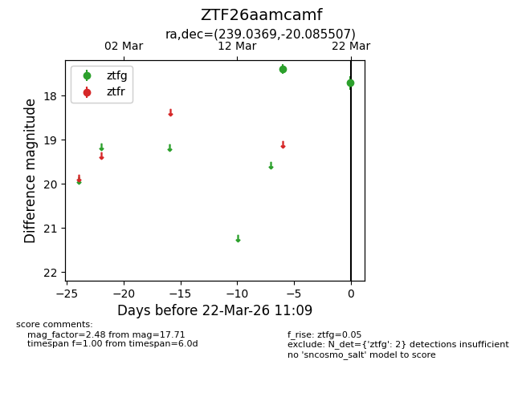
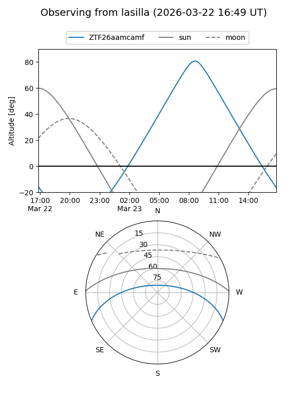
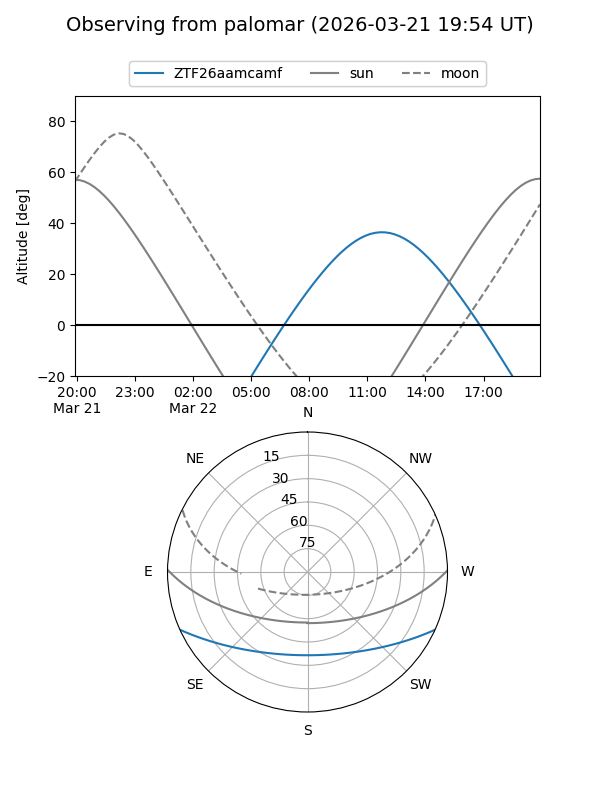
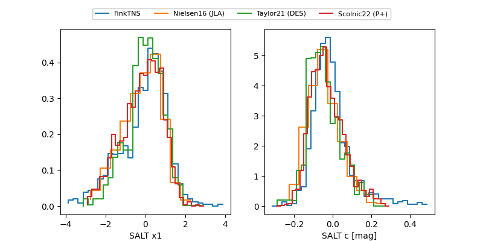

ZTF26aamcamf
Target ZTF26aamcamf at 2026-03-22 11:11
Aliases and brokers:
FINK: link
Lasair: link
ALeRCE: link
alt names
ZTF26aamcamf (ztf,fink_ztf)
Coordinates:
equatorial (ra, dec) = 239.0369,-20.08551
equatorial (HMS+DMS) = 15:56:08.86,-20:05:07.83
galactic (l, b) = (351.3051,+24.97214)
Flags:
Photometry:
last ztfg=17.71
2 ztfg detections
Lightcurve

Visibility


Additional plots
